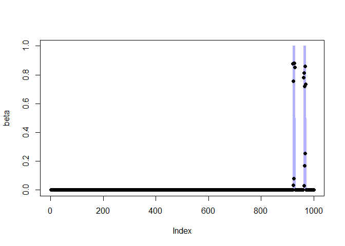

autotunegg provides a fast, cross validation-free tuning for the group lasso with least squares loss.
Installation
You can install the development version of autotunegg from GitHub with:
# install.packages("pak")
pak::pak("stevebroll/autotunegg")
#> ℹ Loading metadata database✔ Loading metadata database ... done
#>
#> → Package library at 'C:\Users\steve\AppData\Local\R\win-library\4.6'.
#> ℹ No downloads are needed
#> ✔ 1 pkg + 2 deps: kept 3 [7.3s]Example Usage:
# generate simple data
library(autotunegg)
set.seed(2026)
n <- 100
pg <- 10
p <- pg*n
group <- rep(1:n, each = pg)
# 2 target groups (beta = 1)
s <- 2*pg
beta <- rep(0, p); beta[group == sample(unique(group), 2)] = 1
x <- matrix(rnorm(n*p),n,p)
snr <- 4
error.sd <- sqrt(sum(beta^2)/ snr)
err <- rnorm(n, 0, error.sd)
y <- x %*% beta + err
fit <- autotunegg(x, y, group, active = T, trace_it = T)
#> Iteration: 1Iteration: 2
#> No of predictor group significant for sigma estimation: 2
# # plot beta's
plot(beta, type = 'l', col = adjustcolor("blue", alpha.f = 0.3))
points(fit$beta, pch = 16)